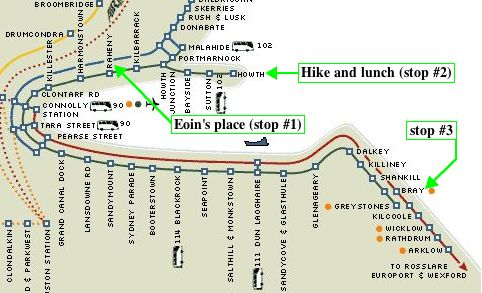

|
Once I dropped my bag off at Eoin's place, I decided to ignore whatever lethargy the long plane ride might have inspired and go see/do something. With the DART close by, Eoin suggested we ride the rails a bit. We ended up going to the northern-most and almost-southern-most stops on the DART line. (Hey, let's make the most of the day pass.)
As shown on the DART map, Howth is located at the end of a small peninsula which juts out into the Dublin Bay. At the end of this peninsula, up a hill but not very far from the center of town, is Howth Head. There are hiking paths around the Head, offering some great views. After the hike, we ate lunch in Howth at the wonderfully named pub/restaurant The Bloody Stream. Bray was not as interesting as Howth, but, still, we found a nice pub (shocking). |
 |